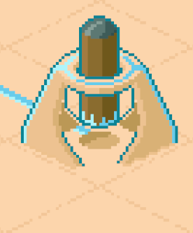
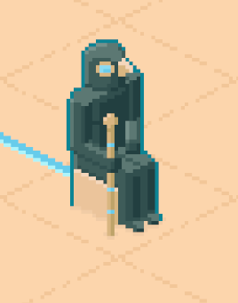
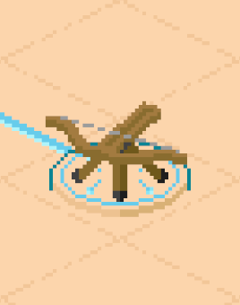
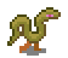
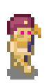

Published on 21.06.2025
Koshari Defense Alpha 4.0 is out now!
Welcome to the latest major update of Koshari Defense! We've not only added new towers, enemies, and levels, but also introduced a new badge system that rewards you for your achievements.
Towers
Geb’s Hammer
What was previously the Horus Statue is now a massive battering ram that shakes the ground around it with shockwaves.

The New Horus Statue
As the image of the sky god, the statue no longer generates shockwaves. Instead, it summons sandstorms around itself that briefly slow down their targets.

Ballista
A heavy, stationary weapon whose bolts pierce through all enemies in its line of fire. It can handle both swarms of weak enemies and small groups of strong ones.

Enemies
Snakes

Never seen a snake with legs before? Now you have. If you already think it’s too fast in this state, you won’t stand a chance once it starts slithering.
Mummy Summoner

An undead priest with the power to breathe evil spirits into lifeless mummies. Don’t let him roam freely for too long, or you’ll soon be facing an entire army of monsters.
Level Selection
The new level selection overview makes it easier to understand what you’re getting into before starting a level. It shows which towers are available, what the map looks like, and how severe the threat is in that region. You’ll also see at a glance which badges you’ve already earned.
Badges
Finishing a level is one thing, but doing it without taking damage, never pausing, or not selling any towers is another challenge entirely. To ensure these feats don’t go unnoticed, you now receive badges for special accomplishments.
Levels
Crocodile Overpass
A level with only archer towers and mummies? That’s boring. From now on, the Ballista is also available here. Koshari even gives you some useful tips on how to use it effectively.
A Storm in the Jungle
In the dense jungle, Koshari’s subjects have discovered the Horus Statue. In this challenging level, it will help you fight snakes and Mummy Summoners.
Miscellaneous
- New look: Several graphics such as temples, mummies, and houses have been reworked, and new plants have been added.
- The Obelisk’s laser now increases its damage only twice instead of three times. The width of the beam now indicates its strength.
- Water is now animated.
- New tower upgrade UI: You can now always see how much better a tower becomes with the next upgrade.
- Hover over a portal to preview the path enemies will take.
- And many other small improvements—maybe someone will notice…